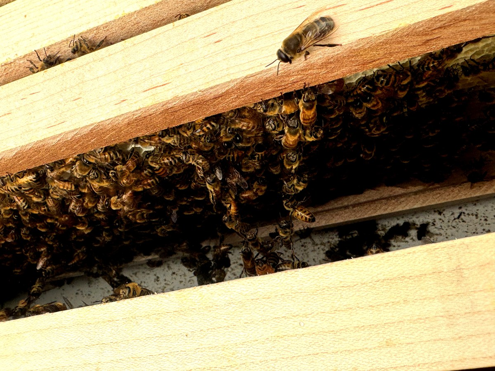
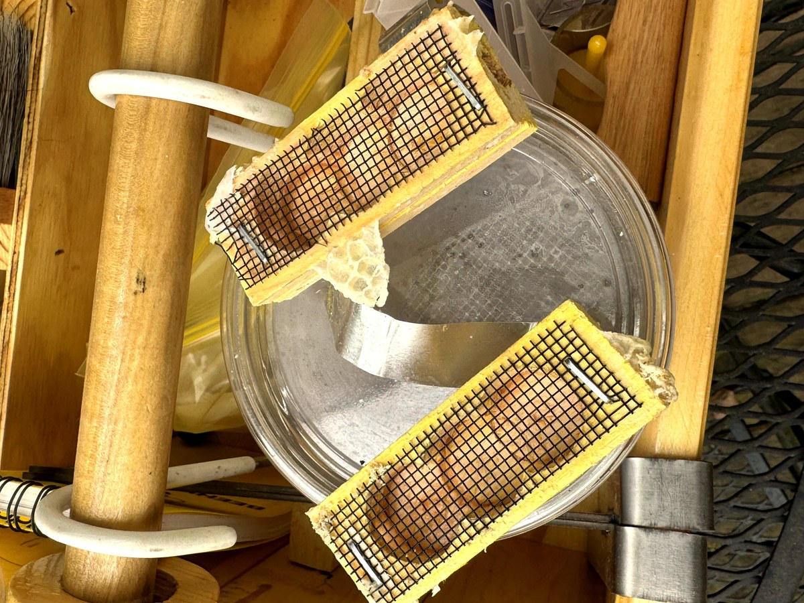

Day 3 — A Quick Look and a Good Sign
Day three called for a quick, low-disturbance check — just enough to confirm both queens had been released and that things were moving in the right direction. The weather was overcast with a slight breeze, not ideal but workable. Minimal smoke, in and out, no lingering.


The frames themselves looked good. Bees were covering the foundation and putting it to work. There is something satisfying about seeing wax being drawn out on foundation you installed yourself just days before — it means the colony has accepted the space and is committing to it.
The alcohol wash cups are staged and ready. The plan is a baseline mite count around the three-week mark, which will give us a true read on where things stand before we make any treatment decisions. For now, the priority is letting both colonies settle in and build without unnecessary interference.
It was a short visit — maybe ten minutes across both hives. Sometimes that is exactly the right amount. They did not need me in there. They just needed me to check in and get out of the way.